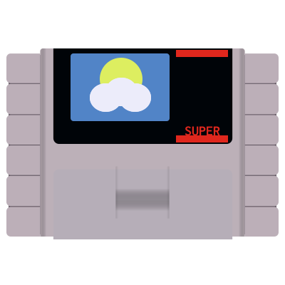

Super Nintendo Entertainment System
The Top 10 Best Selling SNES Games!
11/1/24The Super Nintendo was graced with phenomenal console sales, with over 49.1 million units sold worldwide. This could be impart attributed to Nintendo's dedication to its game quality control. Nintendo introduced its seal of quality in 1985 to the American and European markets to help distinguish officially licensed games from pirated knock-offs flooding the market...
What makes a Super Nintendo?
10/17/24The Super Nintendo Entertainment System (SNES) arrived on the scene in 1990 with its initial release to the Japanese and South Korean markets under the name Super Famicom. The world was greeted with a lovely 16-bit improvement on the 8-bit Nintendo Entertainment System (NES). Despite entering into the 16-bit era (1987-2004) a little late...